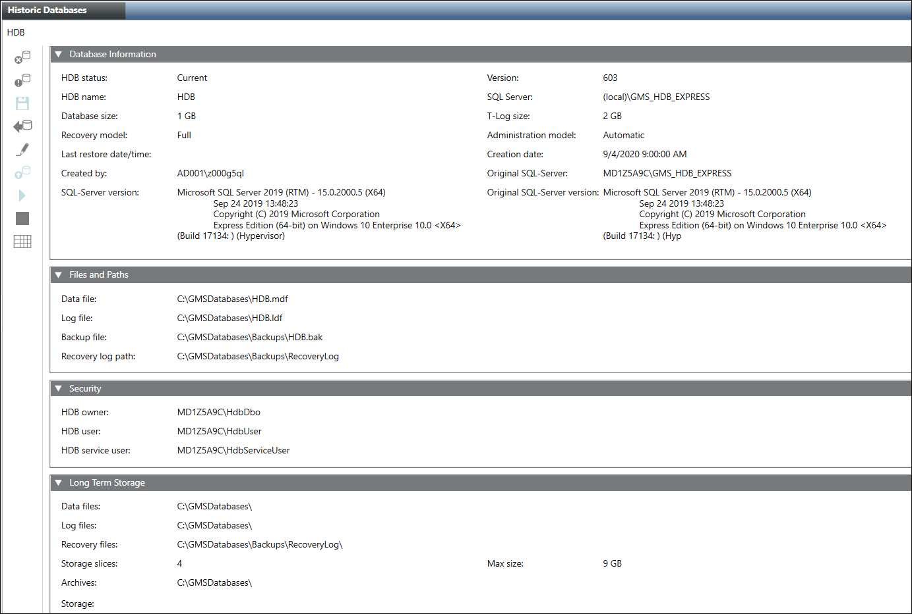

Create a New HDB with Long Term Storage
- The destination folder where the HDB data and log files will be stored, typically GMSDatabases, is not compressed.
- In the SMC tree, select Database Infrastructure > [SQL Server Name].
- Click Create
 and select Create History Database from the displayed options.
and select Create History Database from the displayed options. - Open the Database Information expander and enter data into the following fields:
- DB name: Enter a name for the HDB (do not use special characters, for more information, see Database information in History Infrastructure Workspace.)
- Database size: Set the size of the HDB:
‒ Maximum 10 GB for SQL Server Express
‒ Maximum 250 GB for SQL Server
(For additional information on the database size, see the NOTE following this procedure). - Recovery model: Select the backup model Simple or Full for the history database. The backup model can be manually changed in both directions at any time. Long term storage databases are always in recovery model Full. (For more information, see Recovery Models).
- Administration model: Select the option Automatic or Manual.
Automatic (strongly recommended): Select automatic to run all HDB maintenance tasks by the HDB service.
Manual (not recommended): This is set only in specific cases wherein the customer does not want the Siemens GMS HDB Service to run with advanced privileges or even does not want the service itself.
For more details, see the Manual Administration Model (A6V11559132). - Select the Files and Paths expander (do not use special characters - for more information, see Files and Paths) and enter the following data:
- Data file: C:\[MyHDB]\HDB.mdf
- Log file: C:\[MyLog]\HDB.ldf
- Backup file: C:\[MyBak]\HDB.bak
- Recovery log path: C:\[MyRevoveryPath]
NOTE: If you do not use the standard paths in the Data file, Log file, Backup file, and Recovery log path fields and if the SQL Server is on a different computer, you must first create the folders before you click Save. - Select the Security expander and check the displayed user names.
a. DB owner: Desigo CC SMC user who requires HDB owner rights. You can change it as required. The HDB owner must be different than the HDB user and the HDB service user.
b. DB user: Desigo CC project user who requires HDB user rights for read and write operations. You can change it as required in System Account Settings. See Settings Expander in SMC System Settings.
c. DB service user: Desigo CC service user who requires HDB service user rights for maintenance operations. You can change it as required HDB Service Account Settings. See Settings Expander in SMC System Settings. - (Optional) Select the Long Term Storage expander and enter or select the following data:
- Data files: Select the destination where you want to save the data files (.mdf).
- Log files: Select the destination where you want to save the log files (.ldf).
NOTE: Due to security and performance reasons, save the data and log files on two separate physical hard disks (not two separate partitions). - Recovery files: Select the destination where you want to save the recovery files.
- Storage slices: Enter how many storage slices the Long Term Storage should have (max. 10). When this number is reached, the oldest storage slice is archived. The Slices table shows the storage slices.
- Max size: Set the maximum size of a storage slice.
Maximum 9 GB on SQL Server Express, default is 9 GB
Maximum 250 GB on SQL Server, default is 9 GB
When this number is reached, another storage slice is created. As long term storage databases are always in recovery model Full each database slice would require twice as much as space of the max size specified, one portion for the Data file and the other for the T-Log file.
NOTE: This entry may override the entry in the Time Sliced field. - Archives: Select a destination where you want to save the archived storage slices. The Archives table shows the archived storage slices.
NOTE: If you do not use the standard paths in the Data files, Log files, Recovery files, and Archives fields and if the SQL Server is on a different computer, you must first create the folders before you click Save. - Start: Select to activate the storage. The storage will be activated when you click Save.
- Time Sliced: Select when the storage has to be sliced.
No: A new storage slice is created when the current slice reaches the max size.
Monthly: A new storage slice is created each month.
Yearly: A new storage slice is created each year
NOTE: This entry may override the entry in the Max size field. - Closing Time: Select at what time a new storage slice is created in case of time sliced.
- Add Storage: Click to create more Long Term Storages.
NOTE: Rename the default storage name in System Browser if requested. - Click Save
 .
. - Click Yes.
- The History Database is created and displays in the SMC tree. This may take a few minutes depending on the selected database size. When you create a new HDB it gets automatically linked to the SQL Server. However, if the History Database creation fails due to mismatch in the localization settings, see troubleshooting.
- The History Database starts automatically.
- History data is logged after linking to the project.
- The Long Term Storage is created when the state in the State column in the Storage table changes to
On. A Long Term Storage slice with the stateCURRENTis created in the Slices table. For more information, see Examples of Archiving Concepts and Add or Rename Storage Names.

NOTE 1:
Select a database size on the engineering computer that is not overly large (1 to 5 GB). The larger the database, the longer it takes to restore date to a customer computer. After restoring data to the customer computer, select Change HDB Properties and extend the database file size according to the project requirements (50 to 250 GB).
NOTE 2:
We recommend not encrypting the hard disk where the database is located. If you encrypt the hard disk with a software application, such as BitLocker, the SMC may not be able to connect to the database (Refer SMC Does Not Connect to the Database from the Troubleshooting the HDB, NDB and Long Term Storage (LTS) section). If you want to encrypt your hard disk, use the SQL Server Enterprise Edition, which has Transparent Data Encryption (TDE).
NOTICE

Data Loss
Data loss will differ depending on the selected recovery model (Simple or Full). For more information, see Recovery Models.
